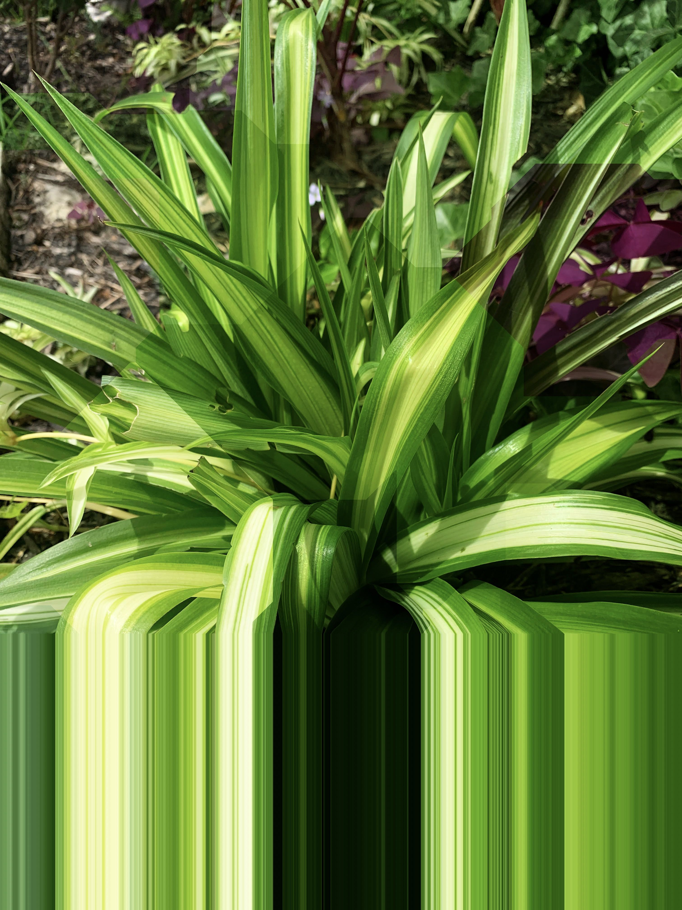

Here's a step-by-step gameplan to help you achieve "no waste":
1. Materials Gathering: Create a system for collecting recyclable materials. This could involve your personal consumption, asking neighbors, or partnering with local businesses.
2. Designing and Building: Start to create your vertical gardens using these materials. Design it in such a way that it's easy for others to replicate.
3. Propagation: Implement a schedule for plant cuttings and propagation. Consider what plants work best in your climate and what plants are best suited for vertical gardens.
4. Metadata and Storytelling: For each garden, document what it's made of, who contributed, its name, and location. Attach historical and fictional stories to make each garden unique and interesting. This information could be included in a tag attached to the garden or on your website.
5. Marketing and Sales: Create a website and marketplace where you can sell these vertical gardens. Take quality photographs and write descriptions highlighting the unique story and sustainable components of each piece. Also, consider a booth at local farmers' markets to reach a broader audience.
6. Community Involvement: Host workshops or classes to show others how to make their own vertical gardens from recyclable materials. This could start as local community events and eventually grow to include travel and wider teaching engagements.
7. Scale-Up: As interest grows, consider larger installations. This could involve partnerships with local businesses or municipalities for public art projects. Or, you could collaborate with other enthusiasts to create colossal vertical gardens.
8. Replication: Encourage people to mimic your idea. The ultimate goal is to make this a movement, not just a personal project. You could create a how-to guide, publish it online, and even offer classes to help others get started.
9. Expansion: As you travel and teach, you can spread the concept further. Partner with sustainable organizations or environmental education programs to reach a broader audience.
10. Goal Achievement: Celebrate when you see the project making an impact – less waste in your community, more vertical gardens being created, and more people becoming aware of sustainable practices.
Remember, this is a process and it may take time to see results. Patience, perseverance, and a positive attitude will go a long way.
Good luck with your inspiring project!
|  |